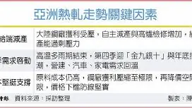
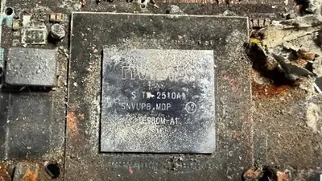

Zach Bussey 🍁
@zachbussey.tos.gg
· 08/13 00:16· 命中「AI safety」
Twitch now uses your channel to train generative AI by default. You can opt out of some training here: www.twitch.tv/settings/sec...

10 200+ 次搜尋 3C2026.08.13
3C2026.08.13
 時事2026.08.12
時事2026.08.12
 寵物2026.08.11
寵物2026.08.11
 時事2026.08.11
時事2026.08.11
 娛樂2026.08.11
娛樂2026.08.11
Social Lab（OpView 社群口碑資料庫）每週彙整各平台熱門事件。榜上的數據以圖表呈現， 這裡列出每週彙整的標題與觀測期間，點進去看完整排行。
 PTT
PTT
 Facebook
Facebook
 Dcard
Dcard
 Mobile01
Mobile01
 YouTube
YouTube
 新聞
新聞
Bluesky 的全站熱門話題，以英語圈的娛樂、體育、政治為主，僅供參考。
以 30 小時內、依讚數與轉發數排序，已過濾掉 AI 繪圖標籤與明顯洗版內容。
Twitch now uses your channel to train generative AI by default. You can opt out of some training here: www.twitch.tv/settings/sec...
Agreed to an interview with a journalist and when I showed up on the Zoom he asked if he could record for his notes (I said sure) and then WITHOUT asking he fired up his AI note taking agent (otter-ai) as a third Zoom participant and I did the interview anyway but wow it felt gross
Joined CNBC's Squawk Box to talk about how 70% of AI revenues are coming from Anthropic and OpenAI, NVIDIA's vendor financing by proxy, and how outside of unprofitable AI labs, there's single-digit billions of dollars of demand for AI compute and software. youtu.be/8GWPjTDPVIM
Despite myths that there's "incredible demand for AI," 70%+ of hyperscaler AI revenues come from OpenAI and Anthropic. In FY26, $24.1bn of Microsoft's $34.33bn in AI revenue came from OpenAI - meaning that GPU rentals and AI software are single-digit billion dollar businesses.
Dario Amodei of Anthropic claims to love American values, and I can think of nothing more American than competition. Yet his approach - masked as an "AI arms race with China" - is focused on crushing open source models that are competing with Claude at a lower price.
⚡ Sanctioned Nvidia AI tech was found inside Russia's new stealth missile. united24media.com/defense-tech...
“i had to ask claude” oh so everything she said about the company being entirely ai bullshit is definitely definitely true
UBS estimates that 48% of Google Cloud's 2027 revenues will come from Anthropic and OpenAI, who represent 70% of AI revenues across Amazon, Google and Microsoft. For hyperscalers to meet analyst expectations, AI labs must raise hundreds of billions of dollars in the next three years.
The crucial part is that an exchange of value occurred. Circular financing still involves CoreWeave or whomever receiving and installing GPUs at some point, or like when Amazon invests in OpenAI and OpenAI pays it for compute, it’s still using compute bsky.app/profile/yeld...
I know I shouldn’t have, but I tested this on my school-provided Gemini account. You can definitely create a complete creationist curriculum with an LLM. If you don’t question the hypotheses, it won’t either. Indifferent to truth indeed.
On CNBC’s Squawk Box at 7:50am ET talking about the AI bubble, NVIDIA’s No IT Loads Refused $500 Billion Infrastructure fund, and how the future of hyperscaler growth is dependent on Anthropic and OpenAI paying them over a hundred billion dollars in 2027 alone.
🤯 An Nvidia Jetson microcomputer was found in Russia's new S-71 "Monochrom" missile with AI technology, according to the Ukrainian intelligence portal War&Sanctions. In total, experts identified 35 new foreign components in Russian weaponry.

ad blockers are good because being able to use whatever client you want, a news reader, browser, plugins, addons, scripts, curl, ai agent, whatever, is a basic necessity of personal computing. it is my computer, you do not get to tell me what i can do with it.
Pulling a gun on a citizen, masked and unidentified, this agent has committed a federal and state felony. AI will be able to identify him and send him to jail. Trump won’t be president forever. @raskin.house.gov @whiteho-47.bsky.social @demgovs.org @chrislhayes.bsky.social @aoc.bsky.social